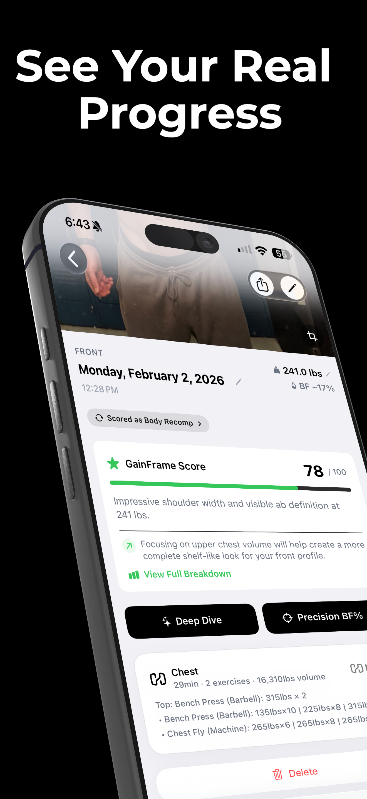
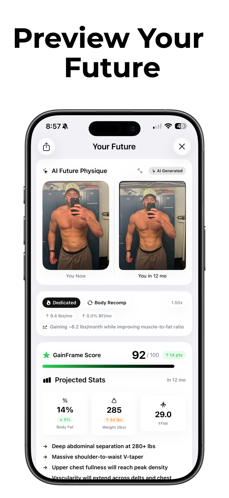
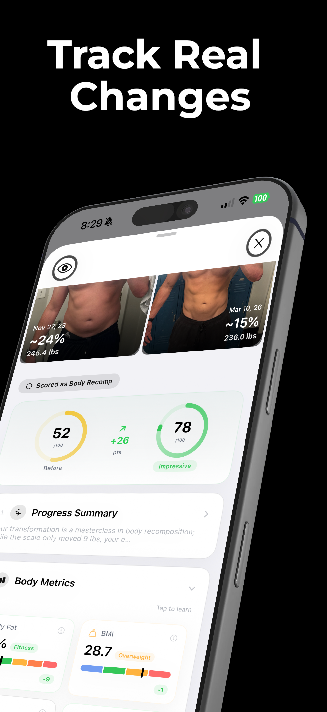
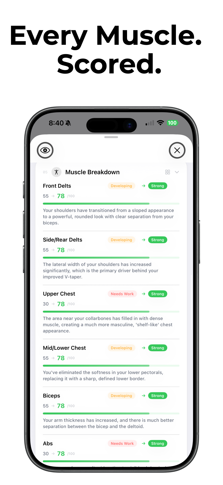
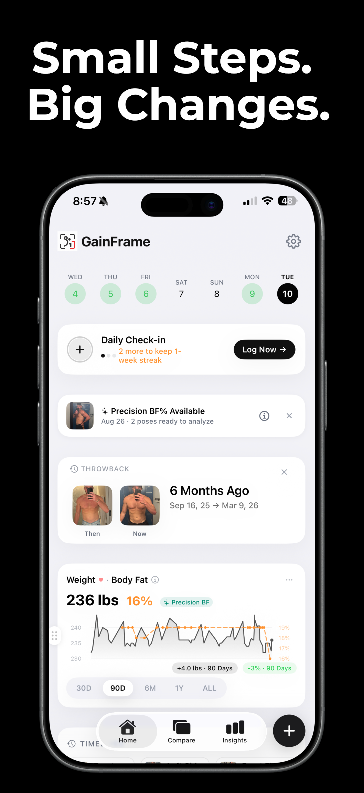

Progress you can
actually measure
GainFrame turns your gym selfies into real data — body fat estimates, muscle scores, and predictions about where you're headed.
GainFrame turns your gym selfies into real data — body fat estimates, muscle scores, and predictions about where you're headed.
One photo. A full breakdown of your body fat %, lean mass, and muscle definition — powered by computer vision, no equipment required.

AI projects your body composition 3, 6, and 12 months out — showing your future physique as an actual image alongside predicted stats. Stay on track or change course.

Pick any two photos. AI compares your body fat, physique score, and muscle composition side by side — so you know exactly what changed and by how much.

AI breaks down your physique muscle by muscle — scoring each group individually so you know exactly what's lagging and what's leading.

Track body fat trends, weight over time, and every check-in you've ever done. Throwbacks surface your best transformations automatically.

Whether you're cutting, bulking, on GLP-1s, or just curious — if you take gym photos, GainFrame makes them useful.
You already take selfies after your best sets. Now they actually track something.
Track whether you're losing fat or muscle while on Ozempic or Mounjaro — in real time.
Track bulk and cut cycles with objective scoring — not just the mirror on your best day.
The scale won't move, but your body fat and muscle scores will. Recomp needs data, not weight.
Free to download. Pro features unlock with a subscription.
Download on the App Store →